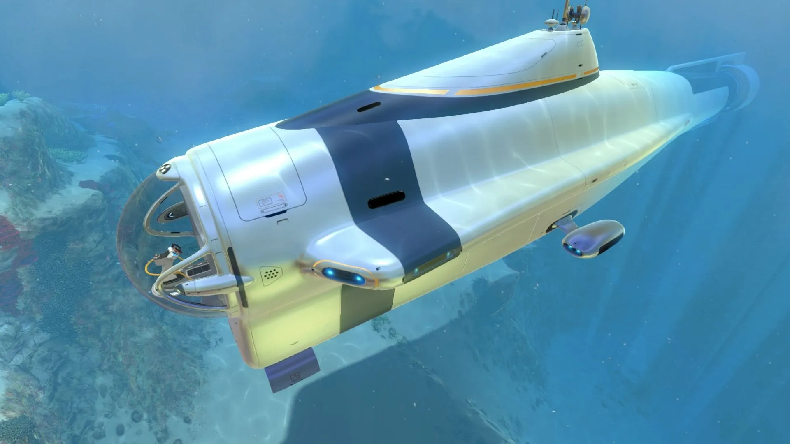
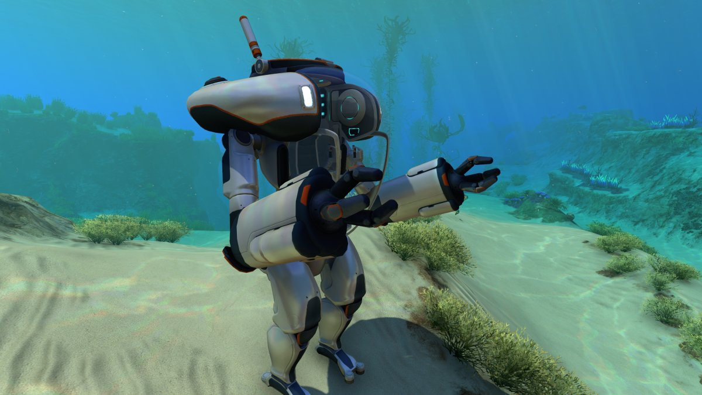

The Seamoth can be used to transport the player quickly in long-distance expeditions, greatly increasing the player's effective exploration distance and adding a bit of protection alongside. It is capable of diving to considerable depths, especially with depth modules equipped, allowing the player to safely explore much of the map. Even though the Seamoth has little armor, various upgrades can be used to increase its capacity to evade and defend against hostile fauna. The Seamoth is an electric vehicle and requires Energy from a Power Cell in order to function. It generates its own oxygen supply. When exiting while the vehicle is moving, the Seamoth will preserve its momentum and place the pilot behind it or in front of it. The pilot should be careful not to exit while quickly moving or with dangerous creatures around, as the Seamoth may move away before the pilot can get back in, leaving them vulnerable to attack, or because the Seamoth might hit the player.

Overview
The Cyclops functions as a cross between a Seabase and a vehicle: the player can freely walk around inside it, only controlling it when they approach the helm control and "use" it. While controlling the helm, the player is still able to move their viewpoint in a limited arc to look around. The Cyclops takes over the movement controls, with forward and back moving the submarine in that direction, swim up and swim down being used to ascend and descend, and left and right used to turn. It cannot "strafe" sideways, nor can it pitch forward or back as the Seamoth can.

Overview
The Pressure Reactive Armored Waterproof Nano Suit Mk.III (abbv. PRAWN Suit Mk.III) is a bipedal mechanical walker, designed for use in extreme-pressure and zero-gravity environments. A plasteel-reinforced canopy of enameled glass protects the single occupant, and dexterity is provided by hydraulic limbs that are capable of striking with enough force to crush bone and pulverize rock. When not in use outside of water, the vehicle assumes a seated position.